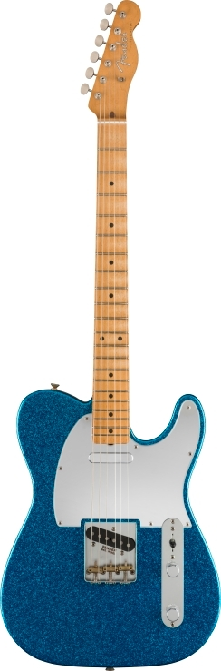
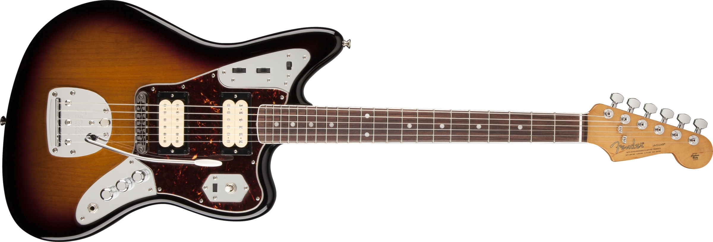
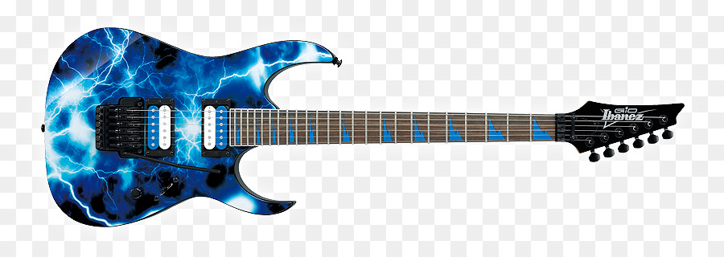
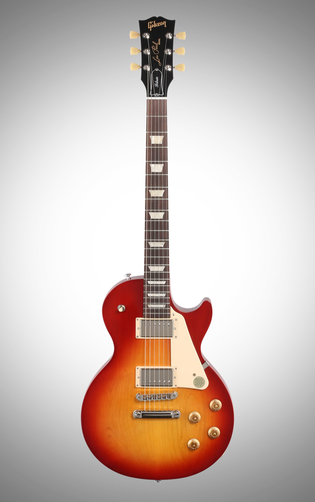
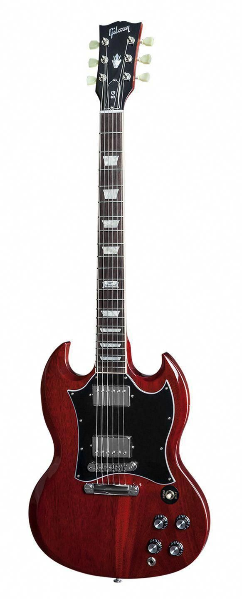
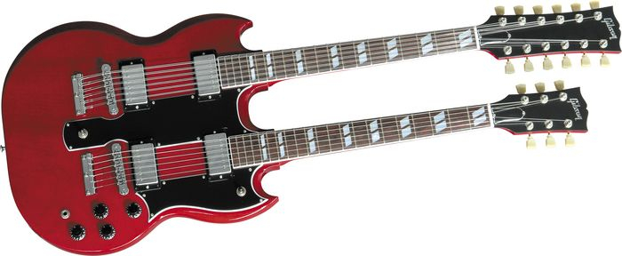

Guitarras
1.Fender Stratocaster

La Fender Stratocaster, popularmente conocida como Strat o Strato, es un modelo de guitarra eléctrica diseñado entre 1952 y 1954 por Leo Fender,
Bill Carson, George Fullerton y Freddie Tavares. Siendo fabricada y comercializada
por Fender Musical Instruments Corporation desde 1954 a la actualidad. Es una guitarra de doble cutaway, con el «cuerno» superior más grande para el balance de la misma
2.Fender Telecaster.
| 
La Fender Telecaster es una guitarra electrica de cuerpo macizo mundialmente conocida, llamada "La Tabla" en sus comienzos. Se caracteriza por la simplicidad en su diseño y por el sonido que se obtiene de sus dos pastillas de bobinado simple o single coil, que aparecen en la inmensa mayoria de sus modelos en lugar de las de bobinado doble o humbuckers que aparecieron posteriormente en otras guitarras.
3.Fender Jaguar
| 
La Fender Jaguar es una guitarra electrica presentada en 1962.La jaguar fue junto con su "Hermana" la jazzmaster muy famosa en los grupos de "surf rock" de los años 60.Volvio a ser popular en los años 90, cuando fue usada por grupos de rock alternativo
4. Ibanez JEM
| 
Ibanez JEM es una guitarra electrica fabricada por Ibanez y producida desde 1978. su mas notable usuario y co-diseñador es Steve Vai
5. Gibson Les Paul
| 
La Gibson Les Paul es un modelo de guitarra eléctrica y bajo de la marca Gibson Guitar Corporation. Fabricada desde 1952, la Gibson Les Paul es extensamente considerada, junto con la Fender Stratocaster, la guitarra eléctrica de cuerpo macizo más popular del mundo
6.Gibson SG
| 
La Gibson SG es un modelo de guitarra eléctrica sacada al mercado en 1961 (como la Gibson Les Paul SG)1 por Gibson, y que sigue en producción desde entonces junto a sus muchas variaciones. La SG Standard es el modelo de guitarra más vendido de Gibson
7.Gibson Flying V
| 
La Gibson Flying V es una guitarra eléctrica popular. Sacada al mercado en 1958 por Gibson, su principal característica es su diseño en forma de flecha. Es muy utilizada por guitarristas de heavy metal.
6.Gibson EDS-1275 Doubleneck
| 
La Gibson EDS-1275 Doubleneck es sin duda la guitarra más vistosa de Jimmy Page, sobre todo a ojos del público profano, por su doble mástil. Es una SG con dos mástiles, el superior tiene un clavijero que permite instalar 12 cuerdas y el inferior es un mástil de 6 cuerdas normal.
|